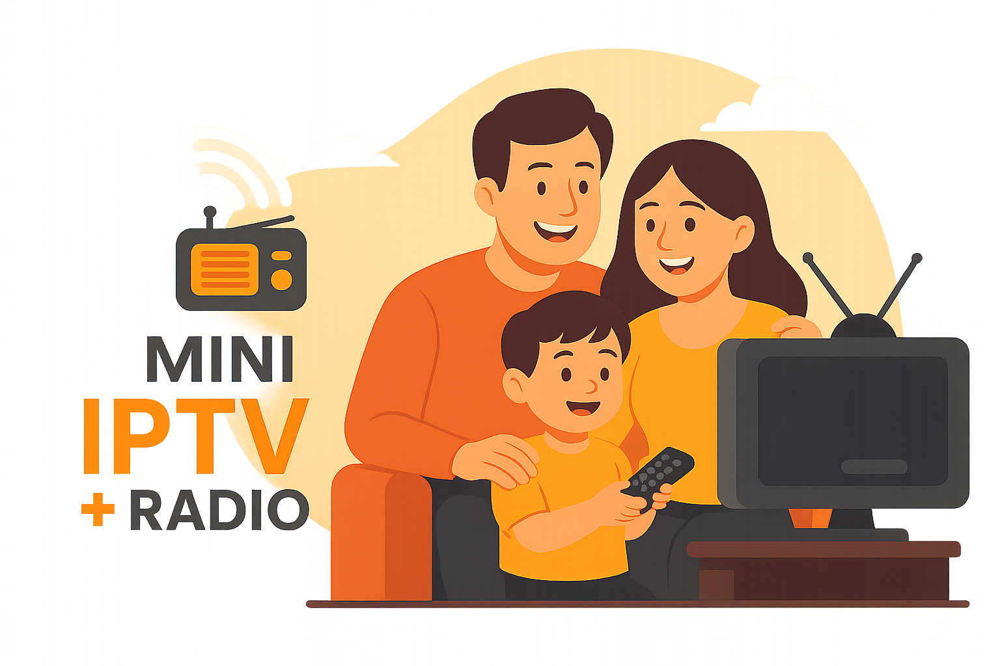

Mini IPTV + Radio
Të gjitha
TV
Radio
Të gjitha grupet
Shqipëri
Kosovë
Turqi
Gjermane
Francë
Gjeorgji
Gjermane - TV Publike
Gjermane - Lajme
Gjermane - Filma
Gjermane - Muzikë
Gjermane - Fëmijë
Arabia Saudite
Islamic
Rikthe të gjithë kanalet
Rezolucioni:
1080p
720p
480p
2160p
Duke ngarkuar...
0 Kbps
⚡
Duke u lidhur...